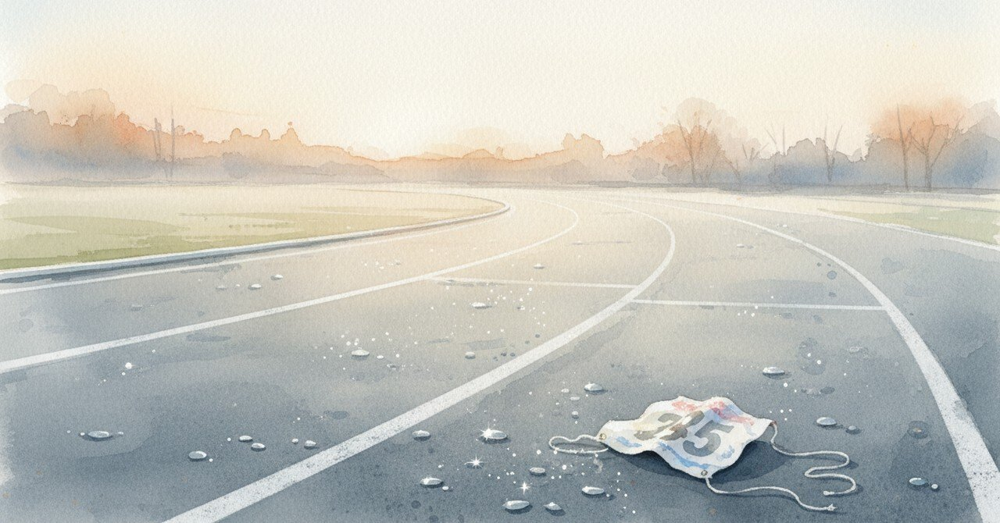

初マラソンを完走した日、心拍に余裕があった

2026-04-24、初マラソンの夜を思い出していた。13位だった、という結果より、「心拍余裕じゃね？」と書いていた自分が残っている。※もちろん大きい大会ではなく小規模な大会である。
今日の現場
最近、短距離の全力より持久戦が多い
記事の連載、プロダクトの継続運用
瞬発ではなく、配分で乗り切る日々
初マラソンで学んだのは、たぶんこれだった
体で覚えたことは、別の領域に転用が利く
あの頃と今
2025年2月2日、深夜0時11分。「今日は待ちに待ったマラソン大会でした」から日記は始まる。「めっちゃ楽しかった！確かに苦しいこともあったし疲れたけど、周りの人のがんばれーが力になった！毎回、しっかり受け止めてそれが完全にパワーに繋がった」と書いていた。
途中の走りながらの心境も書かれていた。「やるぞー！まだがんばれるー！心拍余裕じゃね？ここからはメンタルとの戦いだぁ！！」と。文末のビックリマークの数に、当時の勢いが残っている。「初マラソンで13位は上々だったし、ちょっとずつペースを上げることができたのは嬉しかったなー」とも。
走り終わった後も、そのままジムに行っている。「明日からちゃんとジム通いしなきゃな。スタジオも久しぶりにいこー！天神も行かなきゃなー。明日はいい加減発注書作らないとな！」と、翌日のToDoに戻っていた。体を使い切った夜に、翌日の発注書の心配まで戻ってくる健やかさ。
あれから1年以上経って、走る頻度は落ちた。でも「心拍に余裕があるのにメンタルが折れそうになる」という感覚は、コードを書く夜や、連載が100日を超えた朝にも来る。
頭の中
肉体的な余裕と、精神的な余裕は同期しない。心拍に余裕があるのに弱音が出るのは、弱さではなく、人間の標準仕様な気がする。標準仕様として受け止めると、折れそうな夜の扱い方が少し変わる。
ただ、あの日「声援がパワーになる」と書けた自分は、もしかしたら今より他人に開いていた。今は、自分の中で完結させすぎているかもしれない。
まだ途中のこと
次の「初マラソン」は、どの領域で走ることになるのか。まだ見えていない。ただ、心拍に余裕を残したまま、メンタルで折れない走り方を探している最中だ。
あなたが最近飛び込んだことは、何でしたか。
#AIと始めてみた #日記 #マラソン #挑戦 #自己観察